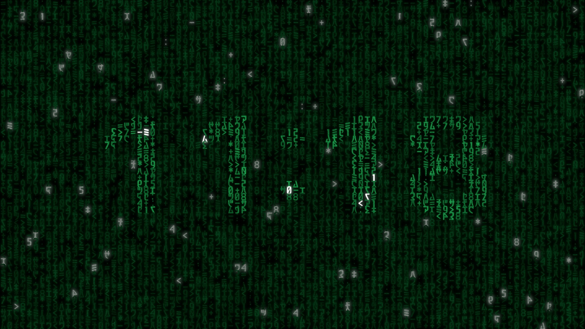
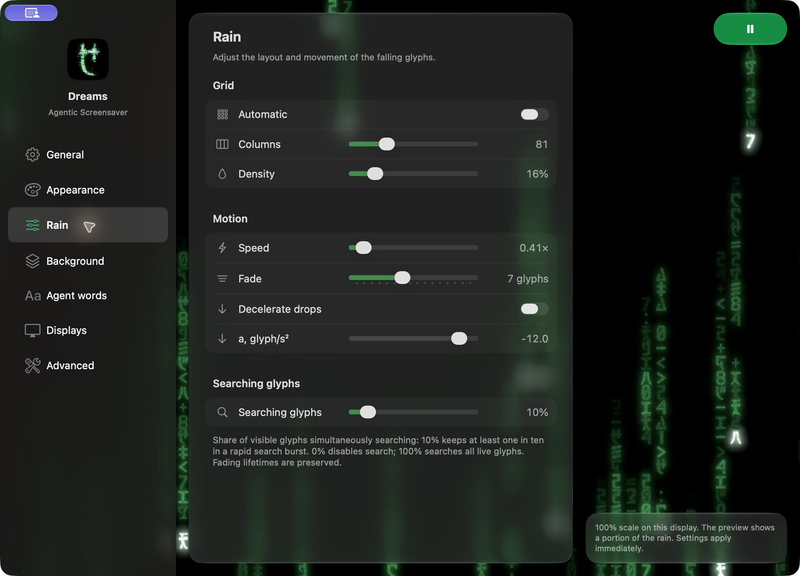

DREAMS FOR APPLE TV
Let it
rain.
A little digital rain for your big screen. And a clock, made from the rain itself.
DREAMS ДЛЯ APPLE TV
Пусть идёт
дождь.
Немного цифрового дождя на большом экране. И часы, которые складываются из его капель.
01 / THE ATMOSPHERE
A quieter kind
of screen time.
Streams of glowing symbols fall, shift and fade. Leave Dreams on while you work, talk, or settle into a quiet evening.
01 / АТМОСФЕРА
Немного тишины
на большом экране.
Потоки светящихся символов падают, меняются и постепенно растворяются. Оставьте Dreams фоном для работы, разговора или тихого вечера.
DIGITAL RAIN
FOR THE ROOM

DREAMS / APPLE TV02 / TIME, REIMAGINED
Time flows
with the rain.
Turn on the clock and watch the digits emerge from the raindrops. Choose its typeface and size, or let it drift gently across the screen.
02 / ВРЕМЯ ВНУТРИ ДОЖДЯ
Время течёт
вместе с дождём.
Включите часы — цифры проступят из капель самого дождя. Выберите шрифт и размер или позвольте часам плавно перемещаться по экрану.
03 / MAKE IT YOURS
Your rain.
Your rules.
Give the rain a character of its own. Adjust everything with your Apple TV remote and see the result in the live preview.
Requires tvOS 18 or later. Dreams runs while open and does not replace the Apple TV system screensaver.
03 / НАСТРОЙТЕ ПОД СЕБЯ
Ваш дождь.
Ваши правила.
У дождя может быть свой характер. Меняйте настройки с пульта Apple TV и сразу смотрите на результат.
Требуется tvOS 18 или новее. Dreams работает, пока открыт, и не заменяет системную заставку Apple TV.
04 / DREAMS FOR MAC
When agents work,
the rain responds.
Dreams turns your agents’ activity into digital rain. Messages make it surge; tool calls appear as lines across your screen. Connect Codex or Claude Code and see when your agents are at work, at a glance.
Download for MacAGENTIC SCREENSAVER FOR YOUR MAC
04 / DREAMS ДЛЯ MAC
Агенты работают.
Дождь оживает.
Dreams превращает работу агентов в цифровой дождь. Сообщения усиливают его, а вызовы инструментов появляются строками на экране. Подключите Codex или Claude Code, чтобы с одного взгляда видеть, когда агенты заняты.
Скачать для MacAGENTIC SCREENSAVER ДЛЯ ВАШЕГО MAC
